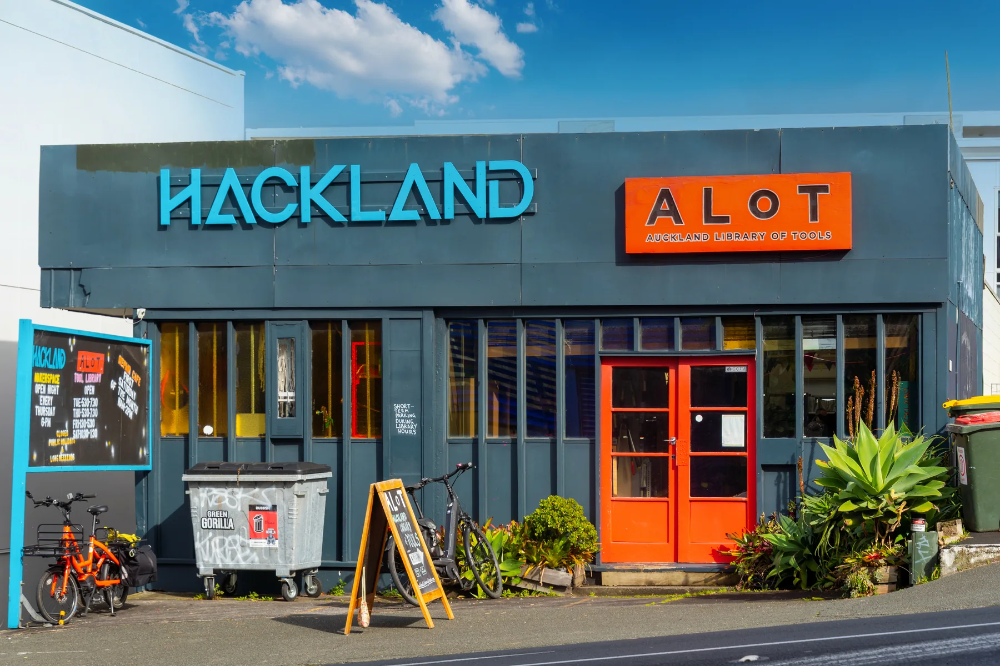
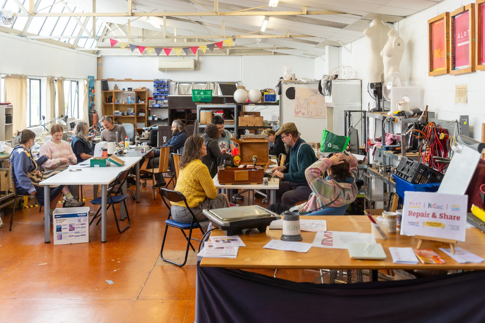

Community volunteering · Auckland · 2026 – present
Volunteer, Auckland Library of Tools (ALoT)
Volunteer at Auckland Library of Tools since 2026: a community workshop built around sharing tools, repair and practical making, where I help people with very different levels of technical confidence.
My role: Volunteer (2026 – present). I support community sessions, help keep the shared workshop welcoming and organised, and explain tools and next steps in plain language.

What I contribute
- Support community sessions and help keep the shared workshop welcoming and organised.
- Listen to what someone is trying to achieve before discussing tools or next steps.
- Explain practical ideas in plain language without assuming technical background.
- Photograph the character of a community centred on making, repair and reuse.

Why it belongs in an engineering portfolio
Useful engineering starts with understanding the person, task and constraint in front of you.
Working around real objects builds judgement about access, durability and maintainability.
Part of how I take part in Auckland life beyond university coursework.
Let's talk
I am looking for graduate and junior mechanical engineering roles in New Zealand.